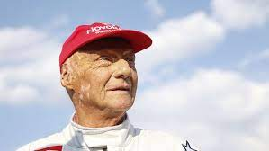
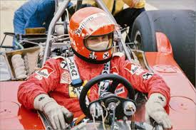

<html>
  <head>
    <meta charset="utf-8">
    <title>Niki Lauda</title>
	<link rel="stylesheet" href="style/style.css">
  </head>
</html>

<h1>Niki Lauda</h1>

<p>Niki Lauda est certainement l’un des meilleurs pilotes de Formule 1 des années 70 et 80. 
   Malgré un très grave accident lors du Grand Prix d’Allemagne en 1976, où Lauda est griévement brûlé au visage et intoxiqué, il reprend le volant 6 semaines après.
   Il finit vice-champion cette même année et remporte le titre l’année suivante, alors que beaucoup le pensaient fragilisé par l’accident.

 Au cours de sa carrière, Niki Lauda a remporté 25 victoires et a été sacré champion du monde 3 fois.
 Toutefois, dans de meilleures conditions et sans cet accident tragique, son palmarès aurait pu être bien plus prestigieux.
 C’est surtout sa force mentale après un tel drame qui fait de l’un des plus grands pilotes de Formule 1 de tous les temps.</p>
 
 
 
 

<body background="image/fondnoir.jpg">
<background-attachment:center center;>